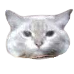
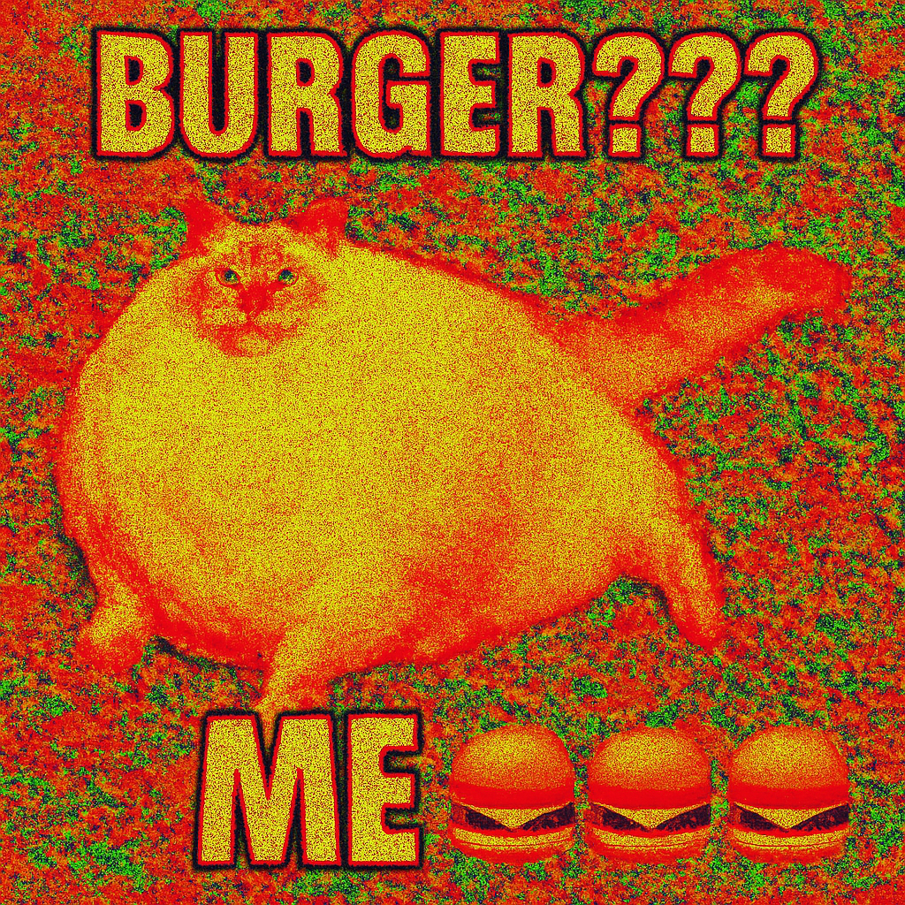
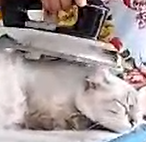
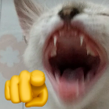

About Luna
Luna was born in a galaxy far away where gravity was just slightly stronger... that's probably why she became the most spherical feline to ever nap on a keyboard.
Some say she’s a cat. Others say she’s a sentient beach ball with whiskers. All we know is: SHE'S HUGE — and she’s proud.

What Does Luna Eat?
- 🔹 Tuna cakes (plural)
- 🔹 Leftover pizza crusts (don't ask how)
- 🔹 Anything that falls on the floor
- 🔹 Her own weight in kibble — daily

The Gallery of the Spherical One





Luna song (Click anywhere to start)
- [Verse]
- Luna no sofá 🛋️
- Toda esticada 😽
- Barriga cheia 🍽️
- Tá encantada 😻
- Ração em pote 🥣
- E mais uma tigela 🍲
- Não sobra nada ❌
- Só vai pra ela 🐾
- [Verse 2]
- Peixe na panela 🐟
- Vai pro pratão 🍴
- Ela lambe tudo 😋
- Sem hesitação 💨
- Mais uma dose 🍽️
- Não tem piedade 💀
- A gata Luna come com vontade 😼
- [Chorus]
- Luna cheia 🐷
- De ração e peixe 🍣
- Cada dia maior 📈
- Ninguém se queixe 🤫
- Gata rainha 👑
- Trono na almofada 🛏️
- Que come tudo 🍴
- Não sobra nada 💔
- [Verse 3]
- Pulo pro balcão 🐾
- Olho no filé 🍖
- Mais comida 🥘
- É o que ela quer 😾
- Mia de leve 😺
- Dá aquela encarada 👀
- Quem vê pensa que tá esfomeada 😵
- [Bridge]
- Oh Luna 👸
- A rainha da fartura 🍴
- Tudo que vê 👀
- Vira aventura 🎢
- Mesmo cheia 😋
- Ainda tá na missão 🎯
- De encher mais ainda esse barrigão 🍕
- [Chorus]
- Luna cheia 🐷
- De ração e peixe 🍣
- Cada dia maior 📈
- Ninguém se queixe 🤫
- Gata rainha 👑
- Trono na almofada 🛏️
- Que come tudo 🍴
- Não sobra nada 💔
✨ Luna's Sacred GIF Shrine ✨


May the pixel power of chonky Luna reign forever. 🐾🌈✨